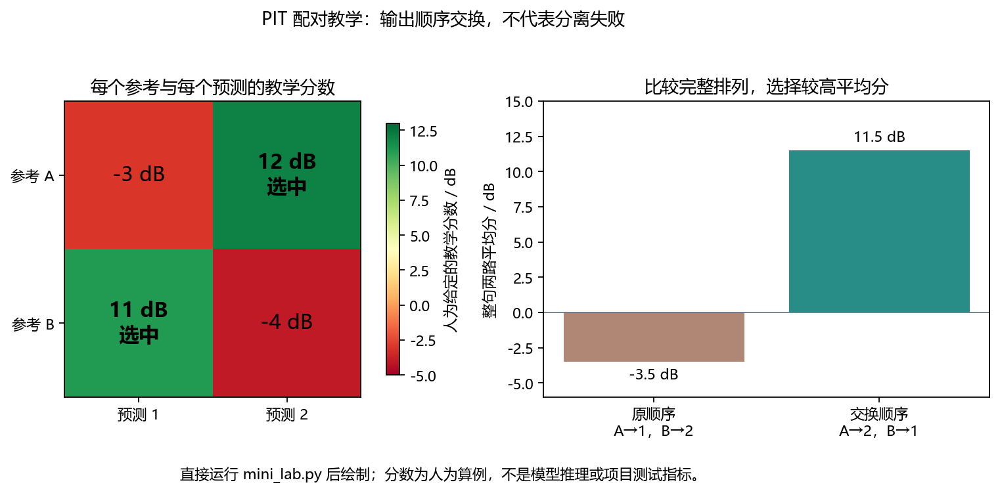
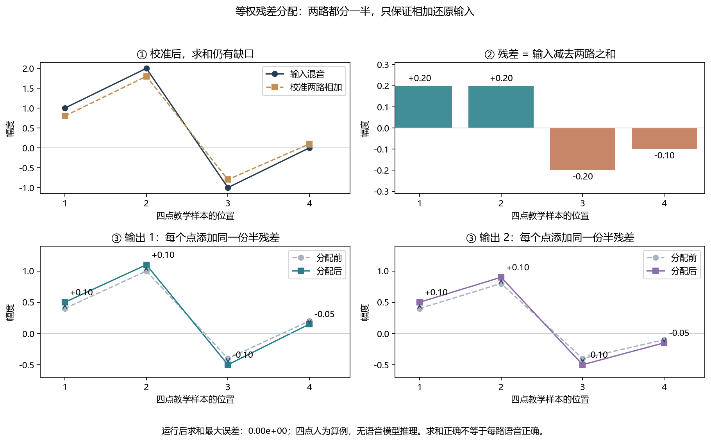
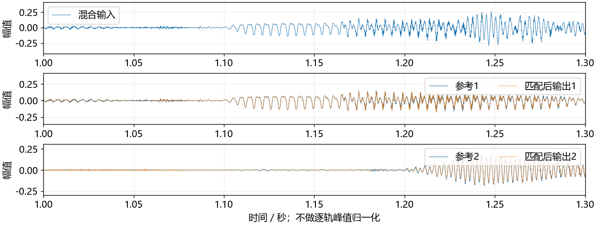

看图理解 · 跟着推演 · 对照真实结果
项目二 · 两个人的声音怎样分开并公平评分
先建立直觉，再逐节讲原理、代码与结果；章节目录可定位学习。通过PIT配对与四点残差分配实验，理解Conv-TasNet分离、后处理和项目证据。
从直觉、原理，到代码与结果
本版保留导览小实验，增加教材逐节精讲、代码分段阅读和结果解释。三个项目另有本次真实模型短推理，第 12 课增加实际训练曲线。按右侧小节分次学习即可，不必一次看完。
完整文字、规范公式和注释代码仍在上方“读完整图文”。视频中的历史报告、教学算例与本次实测分别标明，短演示不冒充完整重训或设备验收。
先修：采样、数组、分贝、卷积和训练基础
- 解释波形编码与两路输出的形状
- 手算PIT的两种排列
- 区分混合一致性、分离正确和微调增量
自己复跑：完整中文注释脚本
下载三个项目的短推理脚本 project_demo.py。它调用原项目实现，不是重新实现整个模型；有中文注释，检查输入、模型身份和输出，不下载资源或启动训练。
- 先按你对应项目的 README 准备项目环境、固定权重和公开示例；使用那个环境的 Python。缺少依赖时先核对解释器，别混用多个环境。
- 把脚本保存到电脑，打开终端进入脚本所在目录。将下面两个路径换成你的真实路径，输出目录必须不存在。
- 运行后看 report.json。增强与分离还会保存 WAV；分离的浮点分析音频试听前应检查峰值，必要时使用共同安全增益。
python project_demo.py convtasnet --project "D:/我的项目/convtasnet-speech-separation" --output "D:/学习输出/convtasnet-01"本脚本已在本次审查副本中分别复跑三个项目。分数应按相同模型、输入和统计口径比较，耗时会随机器和负载变化。失败时保留日志，修复后换一个新输出目录；不要删除模型校验来绕过错误。
本课覆盖清单与证据范围
- A 先知道自己要学会什么
- B 沿着文件找到一段音频的旅行路线
- C 看懂张量：每一个维度代表什么
- D 评分和训练：为什么必须有 PIT
- E 后处理：把“加起来正确”和“每路正确”分开
- F 你的仓库到底训练了什么
- G 读真实结果：能说什么，不能说什么
- H 七次学习安排与闭卷自测
结果从哪里来
- 导览中的小算例实际执行
- 原教材逐节讲解；正文代码/公式/图保留
- 新增真实运行与记录：depth-assets
本课含教材逐节精讲和本次真实短推理；GTCRN使用项目E4，分离使用官方预训练，识别使用冻结Zipformer。历史微调/三种子报告未全量重训；不声称声卡或芯片验收。
新版视频时间轴已改变，单独记录续播位置；学习计划的完成勾选保持不变。
跟着运行：注释代码、实际输出与结果图
下面代码在生成本站时实际执行。这里只是教学小实验，不是完整模型训练或业务设备测评。
import numpy as np
# 四点教学波形，z代表已完成公共增益校准的两路
x = np.array([1., 2., -1., 0.])
z = np.array([[0.4, 1., -0.4, 0.2], [0.4, 0.8, -0.4, -0.1]])
raw_sum = z.sum(axis=0)
r = x-raw_sum # 残差可以为负，不是非负噪声强度
y = z+r[None, :]/2 # 两路各分一半残差
fixed_sum = y.sum(axis=0)
position = np.arange(1, 5)
# 另一个人为评分矩阵：行是参考，列是预测，不由四点波形计算
Q = np.array([[-3., 12.], [11., -4.]])
normal = (Q[0, 0]+Q[1, 1])/2
swapped = (Q[0, 1]+Q[1, 0])/2
print('残差:', np.round(r, 3))
print('求和误差:', round(np.max(abs(fixed_sum-x)), 12))
print('原配对/交换:', normal, swapped)
本次实际输出
残差: [ 0.2 0.2 -0.2 -0.1] 求和误差: 0.0 原配对/交换: -3.5 11.5

精讲中的代码、运行步骤与大图
代码片段用于逐行理解；真实运行结果仅限明确标注“本次实际”的部分。教材历史图保留原有实验范围。
结果读图 04 · D 评分和训练：为什么必须有 PIT
原教材运行记录

原教材已存图 不是本次新测 先确认实验范围 再解释坐标与单位
结果读图 05 · E 后处理：把“加起来正确”和“每路正确
原教材运行记录

原教材已存图 不是本次新测 先确认实验范围 再解释坐标与单位
完整分离前向：从WAV走到两路估计
源码精读 / 教学片段，需配套环境与上下文，不等同于独立脚本。
# 在项目根目录，先按清单准备官方权重
model = load_model().eval()
x, rate = sf.read("assets/mixture.wav", dtype="float32")
assert rate == 8000 and x.ndim == 1
batch = torch.from_numpy(x)[None, None]
with torch.inference_mode(): # 不更新权重
estimates = model(batch)[0].numpy()
assert estimates.shape == (2, len(x))
# 下一步才是公共增益、PIT评测与保存真实hook输出：每一层形状都核对
本次实际模型输出
本次实际模型前向，注册 forward hook 输入 [1, 1, 37840] encoder [1, 512, 4731] mask [1, 2, 512, 4731] decoder [2, 1, 37840] 最终输出 [2, 37840] 总参数 4,984,881；选中微调参数 140,289
真实分离波形：不要只看相加是否正确
本次实际运行

gain SI-SDR 8.137 dB SI-SDRi 8.164 dB 官方权重单样例
闭卷自测：Q=[[-3,12],[11,-4]]时PIT选择什么？求和与混音一致能证明分离正确吗？
选择交换，平均(12+11)/2=11.5，高于原顺序−3.5。求和一致不充分：一路输出全部混音、另一路为零也满足约束。
逐字讲稿 · 可定位回看
两个人同时讲话，模型给你两条分离录音。它通常没有承诺第一条一定是甲，第二条一定是乙。判断分得好不好前，先把对应关系配对。
玩具参考：甲为 [1,0]，乙为 [0,2]，混合为 [1,2]。模型输出第一路 [0,2]，第二路 [1,0]。 若强行第一路对甲、第二路对乙，两路平方误差之和为 10，看起来很差。
换成第一路对乙、第二路对甲，误差就是 0。这个例子说明匹配顺序很重要；PIT 会比较允许的配对，选出合适的损失。 两路输出相加接近输入，只能说明一种混合一致性；两路仍可能都混着两个人，不能据此宣布分离成功。
把两个人同时讲话录进一个麦克风，得到的是一路混合波形。分离模型希望输出两条尽量各含一个人的声音。输入一个声道和输出两个声源并不矛盾，声道描述设备，声源描述发声对象。
这个项目不把音频变成文字，所以不是 ASR；它也不自动给说话人姓名，所以不是身份识别。输出的第一路是谁，本身可能没有固定名字，这正是后面需要处理排列问题的原因。
前半部分先用小算例建立直觉，后面的精讲逐节展开，并加入本次真实模型运行。历史训练报告与本次短推理分开标注；不把官方架构和未亲自掌握的内容写成个人原创。
项目输入要求八千赫兹单声道，四秒就是三万两千点。单条输入张量可以写成一条批次、一个通道、三万两千点。编码器用可学习的一维卷积，把波形换成许多特征序列。
核长十六、步长八、两侧填充八，代入公式得到四千零一个编码时间步。编码通道数五百一十二表示学到的特征方向，不是五百一十二只麦克风，也不直接等于固定 STFT 频率格点。
模型为两个声源分别预测特征掩码，再使用解码器重建两条波形，最终形状为批次、两个声源、原样本长度。尾部为了整除步长而补的点要裁掉，否则与参考对齐会出问题。
掩码网络使用多组膨胀卷积，让较深层看到更长时间范围。膨胀表示隔着一定间距取特征，不是把采样率改了。残差路径继续传信息，跳跃路径把不同层的结果汇集起来。
本项目上游结构使用 ReLU 掩码，只保证非负，不保证每个数小于一，也不保证两路掩码之和是一。不要把看到 mask 就自动理解成分类概率或零到一的开关。
当前实现包含双侧时间填充和跨时间归一化，使用整段上下文，是离线非因果版本。处理一段音频很快，不代表支持流式；简单切小块也可能让上下文和边界行为改变。
假设人为给出一个评分表：参考 A 对预测一是负三，对预测二是十二；参考 B 对预测一是十一，对预测二是负四。按原顺序平均是负三点五，交换后平均是十一点五。
PIT 比较这两个合法排列，选择交换，因为第二路更像 A、第一路更像 B。每一路参考和每一路预测必须恰好使用一次，不能让两个参考都挑同一个看起来好的输出。
匹配通常按整句完成，不能每一帧随意换人，否则会掩盖输出身份中途跳变。这里四个分数是教学输入，不是项目测试成绩，也不是后面四点波形重新算出的 SI-SDR。
SI-SDR 把估计投影到干净参考方向，比较沿参考的能量与剩余失真，整体增益变化不应自动带来好分数。参考需要非零有效能量，静音和异常要有明确处理，不能硬算出漂亮结果。
SI-SDRi 是输出分数减去原混音对同一参考的分数。微调增量则是微调模型减预训练模型，并保持同样后处理。一个描述分离相对不处理的收益，另一个才接近你改动带来的差别。
例如某方案 SI-SDRi 约十三点八分贝，并不意味着你的局部微调优化了十三点八分贝；其中可能主要是预训练模型已有能力。报告时把基线名称、数据和计分方式一起说出。
项目先根据混音与两路估计之和，计算一个公共标量增益，且不读取干净参考。两路一起缩放后叫 z。接下来用混音减去两路之和，得到当前还没有解释的残差。
uniform 方法把残差一半加给第一路，另一半加给第二路。若混音第一个点是一，而两路分别零点四与零点四，残差零点二，每路加零点一，结果各为零点五。
若某一点两路和超过混音，残差就为负，此时是在两路中减掉一点。energy 方法则按全句能量占比分配。它们都只是约束输出求和，不会自动知道哪个残差属于哪个真正说话人。
前四行直接给定混音和已完成公共增益校准的两条教学序列。每条只有四个数，因此你可以逐点用笔核对。这里并没有运行完整模型，也没有把这四个点叫作真实语音。
先沿声源轴相加，得到每个采样位置的重建和，再求残差。新增的轴使同一条半残差广播到两个声源，两路都加同样的值。最后再次求和，应该回到原混音。
后半段另建人为评分矩阵，计算原顺序和交换后的均值。代码注释明确这与四点波形是两个算例，避免把人造分数伪装成波形评测。程序分别打印残差、求和误差和两种配对分数。
横轴只有四个采样位置，纵轴是幅值。先看后处理前的两路之和，与输入存在缺口；均匀分配残差后，两路之和与混音重合，打印的最大误差在数值精度范围内为零。
但图里根本没有两路真实干净参考，所以你不能从重合推出分离正确。一个极端反例是第一路直接输出全部混音，第二路全为零，它们相加也完全正确，却根本没有把两个人分开。
若混音里还含噪声，强制两路相加等于混音，也会把噪声分回两路。混合一致性是有用约束，不是无条件降噪。必须结合每个声源的指标、顺序匹配和具体失败样例分析。
项目从同一官方预训练权重开始，只更新输出 PReLU、输出卷积和解码器，约十四万个参数，占总数约百分之二点八一。编码器和时间卷积主体仍参与前向，但参数被冻结，并不是从零训练整个网络。
已提交报告比较三个种子和三种后处理。主要 gain 控制下，干净条件的平均微调增量约零点零九三分贝，配对区间包含零，因此不能断言稳定改善，更不能包装成大幅提升。
测试中六百条干净条件共享源组合和说话人，报告按二十个互不共享说话人的组重采样，而不是当六百个独立样本。多种子和多种能量比不能自动创造更多独立人物或录音来源。
先闭卷回答：今天的评分表应该选哪种配对？交换后平均十一点五，大于原顺序负三点五。再回答求和误差为零能否证明分离正确？不能，用全部混音给一路的反例就能说明。
接着沿项目入口检查当前到底选择哪个检查点和后处理，不能凭按钮名字猜。恢复训练也不只加载权重，还需要优化器、调度器、随机状态和数据进度；历史 best 与最后一轮不是同一个概念。
面试可以讲清局部适配、配对评测、残差约束和负结果，但不能把网页上已经存在的工作都说成自己独立完成。亲自改一个教学算例、读懂一个源文件、解释一个失败，才能把仓库逐渐转成自己的能力。
输入一条两人同时说话的录音，输出两条尽量各含一人的录音。接着比较预训练模型、局部微调和三种后处理。它不是 ASR，不输出文字；也不是说话人识别，不给出姓名。
如果你不懂：8 kHz、单声道、样本点。先补哪一课：02 数字音频。回来后检查什么：4 秒为什么有 32,000 点。
如果你不懂：数组维度、广播、矩阵乘法。先补哪一课：04 NumPy。回来后检查什么：[None, None] 添加了哪两维。
如果你不懂：分贝、功率比、对数。先补哪一课：03 分贝。回来后检查什么：这里为何用功率比的对数。
如果你不懂：卷积、梯度、训练集和开发集。先补哪一课：12 PyTorch。回来后检查什么：推理为什么没有反向传播。
如果你不懂：降噪和分离的区别。先补哪一课：09 语音前端。回来后检查什么：为什么“两路相加正确”不等于分离正确。
- 不看稿画出波形、编码器、掩码网络、解码器的链路。 - 手算两人 PIT 的两种排列，并解释输出顺序。
- 指出项目训练了哪些参数、冻结了哪些参数。 - 用一分钟讲出真实结果，同时说出不能下的结论。
建议在主时间表中安排一周精读。前 6 天各学 90 分钟，第 7 天复盘与补缺。第一天 A–B，第二天 C，第三天 D，第四天 E，第五天 F–G，第六天 H 验收。每次保留 15 分钟闭卷复述。
步骤：read_wav。实际行为：检查 8 kHz、单声道、0.25–30 秒 WAV。为什么要做：不让错误采样率静默进入模型。
步骤：resolve_demo_model。实际行为：有有效冻结开发选择时用该选择。为什么要做：避免根据测试分数挑演示模型。
步骤：load_model。实际行为：加载模型权重，严格匹配参数名。为什么要做：防止拿错误结构勉强加载。
步骤：torch.inference_mode()。实际行为：只计算前向，不记录梯度。为什么要做：推理不需要训练图。
步骤：process。实际行为：只读取混合与预测，不读取干净参考。为什么要做：部署时拿不到答案。
步骤：evaluate_separation。实际行为：有两路等长参考才评分。为什么要做：没有参考不能硬报 SI-SDR。
步骤：write_listening。实际行为：所有试听轨道使用一个公共防削波增益。为什么要做：不用单独归一化掩盖音量差异。
第一，双声道 WAV 不等于两个干净说话人。左右声道是设备通道，两个说话人是声源。
第二，官方演示入口和自定义分离入口不完全相同。官方演示固定原始权重。已验收的自定义入口选择 seed 20261024 的第 19 轮 best 与 uniform。若本机缺少有效开发选择文件，代码会回退到预训练权重和 gain。查看本次 report.json，不要只凭按钮名称猜模型。 第三，网页里的“模型 RTF”是计算耗时除以音频时长。小于 1 不证明支持流式，也不证明端到端时延达标。读取文件、加载权重、后处理和播放缓冲可能不在同一计时范围内。
B 是一次处理的录音条数，T 是每条录音的样本点数。F 是编码特征通道数，M 是编码后的时间步数。S 是输出声源数，本项目固定为 2。特征通道不是麦克风通道。
4 秒、8 kHz、单条混音是本项目的主要评测配置。根据已读取的网络参数，可推导出下面的 shape；这张表是结构推导，不是本页重新运行模型的日志。
变量或模块：NumPy 混合 mixture。一般 shape：(T,)。这个 4 秒例子的 shape：(32000,)。
变量或模块：输入 tensor。一般 shape：(B, 1, T)。这个 4 秒例子的 shape：(1, 1, 32000)。
变量或模块：编码特征 feats。一般 shape：(B, F, M)。这个 4 秒例子的 shape：(1, 512, 4001)。
变量或模块：两套掩码。一般 shape：(B, S, F, M)。这个 4 秒例子的 shape：(1, 2, 512, 4001)。
变量或模块：掩码后的特征。一般 shape：(B, S, F, M)。这个 4 秒例子的 shape：(1, 2, 512, 4001)。
变量或模块：合并批次与声源维。一般 shape：(BS, F, M)。这个 4 秒例子的 shape：(2, 512, 4001)。
变量或模块：解码后整理。一般 shape：(B, S, T)。这个 4 秒例子的 shape：(1, 2, 32000)。
变量或模块：去掉批次维的最终波形。一般 shape：(S, T)。这个 4 秒例子的 shape：(2, 32000)。
在这里，T=32000、p=8、k=16、s=8，所以 M=4001。若原长度不是步长的整数倍，模型先在末尾补零，最后裁掉新增点。
关键行：self.encoder(padded)。中文解释：把一条波形换成 512 路可学习特征。新手最容易错在哪里：这不是固定 STFT 频点。
关键行：feats.unsqueeze(1)。中文解释：在声源位置添加长度为 1 的维度。新手最容易错在哪里：不是复制新的录音。
关键行：掩码乘特征。中文解释：广播到两路声源，每路使用自己的掩码。新手最容易错在哪里：同一特征可以同时影响两路。
关键行：view(batch_size self.num_sources, ...)。中文解释：把每个声源当成一条待解码样本。新手最容易错在哪里：view 不是任意打乱数值。
关键行：self.decoder(masked)。中文解释：用可学习转置卷积重建波形。新手最容易错在哪里：不是直接拿特征通道播放。
关键行：output[..., :-num_pads]。中文解释：去掉为了对齐而添加的末尾点。新手最容易错在哪里：输出必须和参考等长。
MaskGenerator 有 3 组，每组 8 个卷积块。每组的 dilation 依次是 1、2、4、8、16、32、64、128。膨胀卷积跳着取点，让较深层看到更长的时间范围。残差把信息传到下一块；skip 路径把各层结果汇入输出。
本项目的 conv_tasnet_base() 明确使用 ReLU 掩码。它保证掩码非负，
却不保证掩码不大于 1，也不保证两路掩码相加等于 1。不要把所有“mask”都想成 0–1 概率。
卷积两侧 padding 和跨时间 GroupNorm 都使用整段上下文。这是离线非因果版本，不能只把音频切小就宣称成为可靠流式系统。
假设干净参考是向量 s，模型输出是 估计s。先分别减掉均值。把输出投影到参考方向，沿参考方向的部分算目标；剩下的部分算失真。
这是非退化情况下的数学定义。参考去均值后不能是零能量。仓库实现另做归一化和数值保护，将单路分数限制在 [-120,120] dB。常数预测得到下界；常数参考被拒绝。
直觉上：只把预测整体放大，不会让说话人泄漏自动减少。因此这个指标不应仅因整体幅度变化而升高。它也不等于主观音质，更不能替代试听。
参考与预测：参考 A。预测 1：−3 dB。预测 2：12 dB。
参考与预测：参考 B。预测 1：11 dB。预测 2：−4 dB。
按原顺序配对，平均为 −3.5 dB。交换后为 11.5 dB。显然预测 2 更像 A，预测 1 更像 B。PIT 就比较整句的两种合法排列，选择分数较高的一种。
训练最小化负分数，也就是最大化分离质量。批次中的各条录音分别匹配，再对批次求均值。不能每帧单独换排列，否则会掩盖一句话中途“换人”的问题。
原实现位于 speechsep/losses.py，与下面的教学算例对应。教学代码已经加上中文注释。
左图的行是参考，列是预测。“选中”的两个格子必须各占一行、一列，不能让两个参考都挑同一路输出。右图直接使用这次运行得到的两种排列平均分：原顺序 −3.5 dB，交换后 11.5 dB，所以返回 [1, 0]。这组分数是人为教学输入，不是对四点波形重新计算的 SI-SDR，更不是仓库性能结果。
SI-SDR 是分离输出相对干净参考的分数。SI-SDRi 再减去原混音相对同一参考的分数：
项目的 metrics.evaluate_separation() 只匹配声源顺序，
不做时间平移，也不搜索“最好的一截”。拿错参考、长度不一致或人为错位，都会让分数失去比较意义。
先看这张随教材保存的图。运行已有教学算例后的 PIT 配对图：交换顺序的平均分更高；这不是模型推理指标。本次视频引用既有结果，不把它称为新运行。
横轴、纵轴、图例和单位决定图在回答什么问题。若曲线重合，先问它验证的是数值等价、形状还是算法质量。图像相似不自动证明真实业务效果相同。
把图中观察与本节假设联系起来，再回到前面的代码确认数组来源。合成信号实验、历史报告和真实模型输出属于不同证据范围，不能混成同一个成绩。
设混音为 x，两路原始预测为 y下标1,y下标2。令 u=y下标1+y下标2。非零重建情况下，最小二乘公共增益为：
这是一次整句标量校准，不是频点掩码，也不是学习参数。参考语音没有参与。若重建恰好为零，仓库明确回退为增益 1，并记录退化状态。
方法：gain。操作：只返回校准后的两路。你应该观察什么：给后续比较提供公共幅度控制。
方法：uniform。操作：每路添加一半残差。你应该观察什么：两路相加应恢复混音。
方法：energy。操作：按两路全句能量占比分配残差。你应该观察什么：权重不是每一帧单独估计。
energy 的权重是 E下标k= z下标k 下标2的幂2、a下标k=（E下标k）除以（E下标1+E下标2），再添加 a下标kr。总能量为零时采用等权。实际代码先缩放再算能量，避免任意大幅度造成溢出。
按左上、右上、下排的顺序读图。先比较输入与校准两路之和，再算缺口。最后给每一路添加同一个“半残差”。图中的箭头和数字直接来自运行输出：前三点分别加 0.10、0.10、−0.10，第四点加 −0.05。正残差要加，负残差相当于减；不能把残差当作总是非负的噪声强度。
两图由带中文注释的绘图脚本实际运行生成。脚本直接执行本页的 mini_lab.py 并使用它的变量，未加载 Conv-TasNet、未训练、未伪造语音实验图。
在安装了 Matplotlib 的环境中运行 python tutorial/projects/convtasnet/plot_teaching.py 可重画。
样本位置：1。混音：1.00。校准输出 1：0.40。校准输出 2：0.40。残差：0.20。uniform 输出 1：0.50。uniform 输出 2：0.50。
样本位置：2。混音：2.00。校准输出 1：1.00。校准输出 2：0.80。残差：0.20。uniform 输出 1：1.10。uniform 输出 2：0.90。
样本位置：3。混音：−1.00。校准输出 1：−0.40。校准输出 2：−0.40。残差：−0.20。uniform 输出 1：−0.50。uniform 输出 2：−0.50。
样本位置：4。混音：0.00。校准输出 1：0.20。校准输出 2：−0.10。残差：−0.10。uniform 输出 1：0.15。uniform 输出 2：−0.15。
本次算例的求和误差小于 10的幂-12。但把混音全给第一路、第二路全设为零，也能满足求和约束！所以“混合一致性”只是约束，不是分离正确的充分条件。
噪声混音还有一个坑：如果输入含噪声，而两路输出必须加起来等于输入，噪声也会被分配回输出。不能用这个约束宣称解决了降噪。
先看这张随教材保存的图。运行四点教学算例后的残差分配图：两路在同一位置添加同样的一半残差。本次视频引用既有结果，不把它称为新运行。
横轴、纵轴、图例和单位决定图在回答什么问题。若曲线重合，先问它验证的是数值等价、形状还是算法质量。图像相似不自动证明真实业务效果相同。
把图中观察与本节假设联系起来，再回到前面的代码确认数组来源。合成信号实验、历史报告和真实模型输出属于不同证据范围，不能混成同一个成绩。
行为：预训练推理。参数从哪里来：官方 Libri2Mix 权重。是否更新参数：否。本项目证据：官方样例与预训练基线。
行为：局部微调。参数从哪里来：先加载同一预训练权重。是否更新参数：只更新选定层。本项目证据：三个种子各 20 轮。
行为：从头训练。参数从哪里来：随机初始化。是否更新参数：训练完整模型。本项目证据：本项目没有做。
configure_trainable() 选择三个前缀：mask_generator.output_prelu.、mask_generator.output_conv.、decoder.。可训练参数为 140,289，总参数为 4,984,881，约 2.81%。编码器和 TCN 主体冻结。
冻结层仍参与前向计算，只是不更新参数。
每轮 1,200 个训练组合，梯度累积 4 条后更新一次。所以每轮 300 次更新，20 轮共 6,000 次。梯度累积是在显存或内存较小时累加梯度，不是把同一条数据复制四份。
训练配置使用 Adam，初始学习率为 10的幂-4，梯度范数裁剪阈值为 5。不要把这些数字当成普适最优值，它们是这个受控实验的固定设置。
仓库记录的 VCTK 子集按说话人分成训练 30 人、开发 10 人、测试 40 人、备用 20 人。先划分，再构造混合，避免同一个人的声音跨集合出现。测试有 200 个源组合，每个组合三个干净能量比条件，共 600 行；另外有 200 个白噪声条件。
600 行不是 600 个完全独立的实验对象。相同源组合的不同能量比仍共享说话人和录音。报告按 20 个互不共享说话人的配对组做 bootstrap，三种子与同组变体一起保留。
不同说话人的文本也可能相同。报告指出测试源中 183/400 条与其他划分有相同规范化文本。没有同一源录音泄漏，不等于语言内容完全独立。现有区间没有涵盖全部跨组文本依赖。
last.pt 不只有模型参数。还保存优化器、学习率调度器、随机状态、当前顺序和进度。只恢复权重再从任意数据位置训练，不等于严格续跑。best.pt 则按开发集分数保存选中的模型，不能用“最后一轮”自动替代。
测试前冻结数据、代码与 checkpoint 哈希。evaluation.py 对测试访问有显式检查。为了学习损失函数，不要改掉这些保护后反复试测试集。
以下值来自仓库 reports/final/report.json，不是这次建网站重跑的结果。与文字结果分析交叉核对过，但本页没有重新执行完整证据审计。
后处理：gain。clean 配对增量：+0.092934 dB。95% 区间：[−0.009001, +0.188460]。10 dB 白噪声配对增量：+0.023579 dB。95% 区间：[−0.002412, +0.048071]。
后处理：uniform。clean 配对增量：+0.102811 dB。95% 区间：[+0.000617, +0.198541]。10 dB 白噪声配对增量：+0.043680 dB。95% 区间：[+0.019014, +0.066262]。
后处理：energy。clean 配对增量：+0.113386 dB。95% 区间：[+0.015209, +0.207256]。10 dB 白噪声配对增量：+0.043368 dB。95% 区间：[+0.018994, +0.065991]。
每一行都在同一种后处理下比较微调与预训练。主要 gain 控制的区间跨零，不能断言稳定改善。uniform 的 clean 下界仅略大于零，而且多重比较未校正。不能把它包装成“大幅提升”。
冻结开发选择是 seed 20261024 的 best 加 uniform。该方案 clean 测试 SI-SDR 为 13.833776 dB，SI-SDRi 为 13.824552 dB；白噪声条件分别为 7.473336 dB 和 8.257711 dB。
这些是一个固定方案的绝对分数，不是“三种子平均微调提升”。拿 13.824552 dB 当成“我优化了 13.8 dB”会把预训练模型的能力也算成自己的优化。
结果分析记录：seed 20261024、uniform 对比同后处理的预训练模型，有 187/600 个 clean 条件退化。这个比例描述相关观测，不应套用独立伯努利试验来算置信区间。
失败分析应该问：两个说话人是否音色相似？弱源是否被吞掉？背景噪声是否被分到某一路？本页未试听这些案例，因此不根据分数编造具体听感。
“我基于官方 Conv-TasNet 预训练模型，研究了 CPU 局部适配与混合一致性后处理。实验固定了数据划分和评测协议，比较三个种子及三种后处理。主要 gain 控制的微调增量区间跨零，因此我没有声称稳定提升。我重点分析了说话人分组评测、失败案例和断点恢复。
官方结构和权重来自上游，AI 协作实现的部分与我能独立解释、修改和验证的部分分开说明。”
只有你实际能完成下面的练习，才能把对应能力写成个人掌握。不建议只把这段介绍背下来。 证据原件：模型代码 · 损失代码 · 后处理代码 · 结果原始 JSON。链接需要有该私有仓库的访问权。
次数：1。90 分钟安排：15 分钟看讲解；30 分钟读 A–B；30 分钟画调用链；15 分钟复述。需要留下的产物：一张不看稿的项目流程图。
次数：2。90 分钟安排：15 分钟复习采样；30 分钟读 C；30 分钟逐行写 shape；15 分钟检查。需要留下的产物：完整 shape 表，解释 4001 的来源。
次数：3。90 分钟安排：20 分钟读 D；25 分钟手算 PIT；30 分钟读损失代码；15 分钟自测。需要留下的产物：一张配对分数矩阵和一段指标解释。
次数：4。90 分钟安排：20 分钟读 E；25 分钟手算残差；30 分钟运行教学算例；15 分钟总结。需要留下的产物：输出表和“约束不等于正确”的反例。
次数：5。90 分钟安排：20 分钟读 F；25 分钟画数据划分；30 分钟读 G；15 分钟复述。需要留下的产物：一张实验对照表，区分绝对值与增量。
次数：6。90 分钟安排：20 分钟闭卷作答；30 分钟查错；25 分钟整理失败分析问题；15 分钟录一段项目介绍。需要留下的产物：2 分钟介绍＋不会的问题清单。
次数：7。90 分钟安排：20 分钟回听介绍；30 分钟补最弱一节；25 分钟对比 GTCRN；15 分钟周总结。需要留下的产物：说明分离与降噪的输入、输出和指标差别。
1. 一条 4 秒、8 kHz 的混音，模型输入是什么 shape？ 2. 编码后的 512 是 512 个麦克风吗？ 3. ReLU 掩码一定落在 0 到 1 吗？ 4. 为什么 PIT 不能逐帧任意交换输出？ 5. 两路输出相加等于混音，能证明分离正确吗？
6. gain 的平均微调增量为正，为什么仍不能声称稳定提升？ 7. 600 个 clean 条件为什么只按 20 个组重采样？ 8. 你有模型文件，没有优化器和随机状态，算严格恢复训练吗？
题号：1。答案：(1, 1, 32000)，依次为批次、输入通道、样本。错了回哪里：C。
题号：2。答案：不是，是学习得到的编码特征通道。错了回哪里：C。
题号：3。答案：不是，只保证非负。错了回哪里：C。
题号：4。答案：一句话中输出身份应一致，逐帧换人会掩盖身份跳变。错了回哪里：D。
题号：5。答案：不能。把混音全给一路也是满足约束的错误分离。错了回哪里：E。
题号：6。答案：主要配对区间包含零，现有证据不足以排除无改善。错了回哪里：G。
题号：7。答案：同组共享说话人和源组合，条件行不是独立样本。错了回哪里：F。
题号：8。答案：不算，还缺优化器、调度器、随机状态和数据进度等。错了回哪里：F。
在学习网站根目录运行下面的教学算例。它只用 Python 标准库，不下载数据、不加载权重、不训练。
看到 assignment 为 [1, 0]，求和误差检查为 true，只能说明这个小算例通过。
下一步才是在原项目环境阅读状态、核对模型身份，并按已有操作说明运行一次短音频推理。
完成本页后，继续学习工程评测与部署和项目整理。若要接到语音识别，先读ASR 入门：分离是否改善识别，要用下游 CER 或 WER 另做实验，不能从 SI-SDR 直接推断。
这次真实分离使用项目锁定的官方预训练权重，文件SHA已经核验。用户项目的局部微调检查点保存在原训练机器，不在这个Git快照里，所以我们没有把官方输出冒充你的最终微调模型。
恢复历史微调需要真正的权重文件，而不是报告中的哈希字符串。哈希只能核对身份，不能重建权重。重新训练还可能受随机性和环境影响，也不是恢复同一个历史模型。
因此视频把两类证据分开：本次演示确认完整网络如何运行，历史报告解释局部适配的实验结论。你在本机运行时，要在收据里确认实际检查点路径和身份。
这段代码是可在项目环境拼入演示脚本的核心路径。先加载已校验的模型并进入eval，再读八千赫兹单声道。两个新增维度分别是批次和输入通道，不是两位说话人。
本次真实输入有三万七千八百四十点，约四点七三秒。模型实际前向运行，不是只计算四个数的残差。推理模式禁止记录多余梯度，但仍执行完整编码器、掩码网络和解码器。
输出应有两个声源、每个与输入等长。此时两路身份没有固定标签，评价时再按整句PIT匹配；没有干净参考时不能用输出编号假装知道哪个人是谁。
这是本次在编码器、掩码网络和解码器注册forward hook后记录的形状。hook只观察输出，不替换模型计算。它能帮助你把纸上的维度公式与实际网络对应起来。
五百一十二是学习到的编码特征。掩码多出的二表示两个声源，每个声源都有一整套特征掩码。解码时把批次和声源暂时合并，所以内部看到二、一、样本数，之后再整理回声源维度。
配置局部可训练参数后，选中的数量是十四万零二百八十九。这里只核对选择规则，没有执行微调。编码器和TCN参数冻结也仍然参加前向，冻结不是删除这些层。
第一行是混合输入，下面两行分别叠加干净参考与匹配后的输出。所有图使用相同时间范围，没有逐轨峰值归一化。我们应观察每一路是否接近对应说话人，而不只是两路相加是否等于混音。
本次gain后处理的平均输出SI-SDR约8.14分贝，相对混音改善约8.16分贝。两者数值接近只是这个样例的混音基线接近零，不是定义相同。
这仍是官方预训练模型的一条演示，不能叫作你的微调收益。项目历史微调增量要在相同测试样本和相同后处理下比较，并保留置信区间与负结果。
两条参考、两条预测组成四个配对分数或损失。对两个合法排列分别求平均，选择更优排列。若损失定义是负SI-SDR，就取更小损失；不要把评分最大化与损失最小化的方向弄反。
选择排列本身是离散操作，但被选择的波形损失仍由张量运算构成，可以对预测与模型参数反向传播。若中途转成NumPy或用item重建损失，就会切断计算图。
训练测试应检查梯度有限、选中参数变化、冻结参数不变，以及断点恢复等价。仅看到一条下降曲线，无法排除没有按预期更新或误动了冻结主体。
先检查输入八千赫兹、一个声道、有限非静音样本，以及混音与参考等长。长度不一致时不要偷偷寻找最佳移位来抬高分数，先定位准备数据的错误。
保存分析用浮点输出与试听副本时，所有对照使用共同安全增益，防止削波并保留相对响度。参考匹配只用于评测和解释，不代表部署时可以访问干净答案。
本模型使用双侧上下文和跨时间归一化，是离线非因果设置。把长音频随便切块可能产生边界和身份交换问题，需要单独设计和验证，不能凭RTF小于一就写成实时流式部署。
适用边界与参考正文
本课含教材逐节精讲和本次真实短推理；GTCRN使用项目E4，分离使用官方预训练，识别使用冻结Zipformer。历史微调/三种子报告未全量重训；不声称声卡或芯片验收。
教学图与实验图由本站整理生成；项目代码、预训练模型和公开数据的来源见配套正文。旁白是本地中文语音合成，不是教师真人录音，也不是 NotebookLM 生成。没有向 Google 上传项目材料。